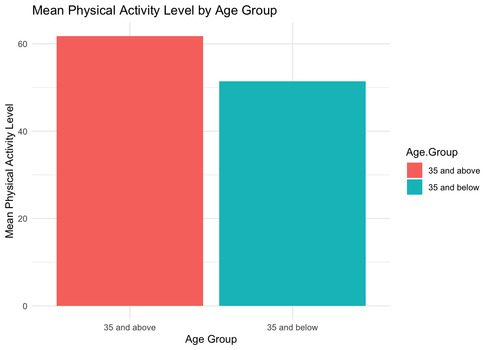
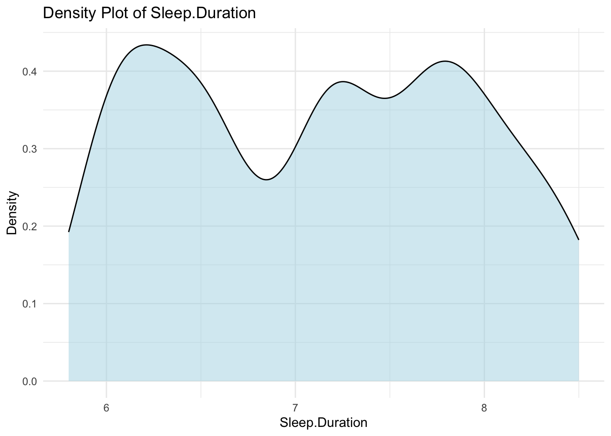
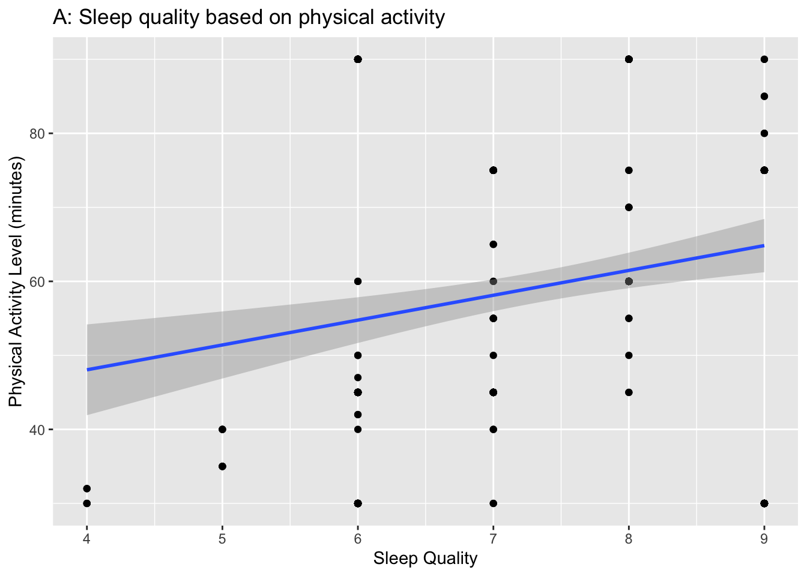
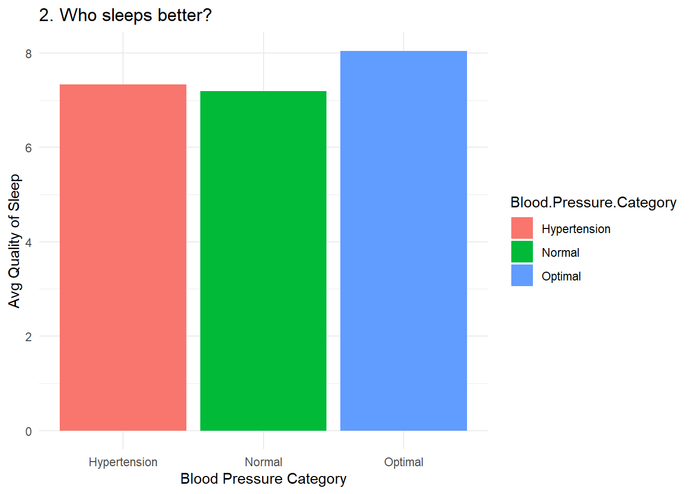
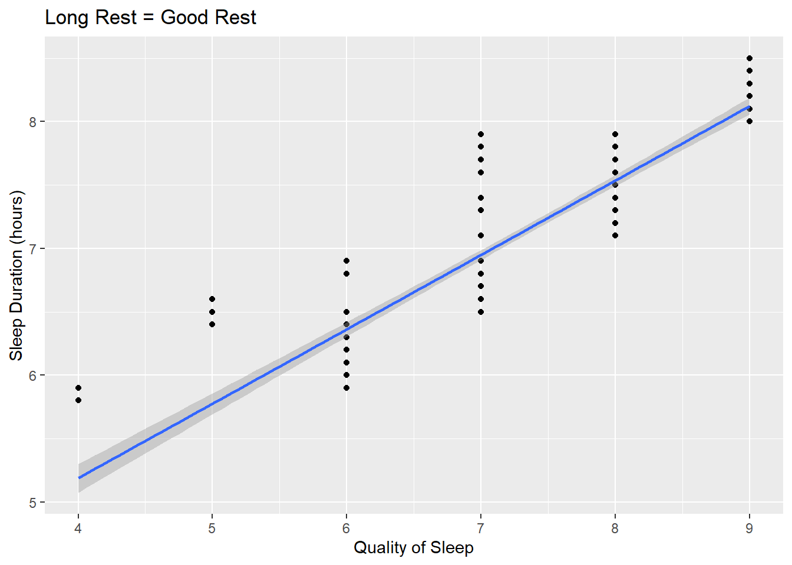
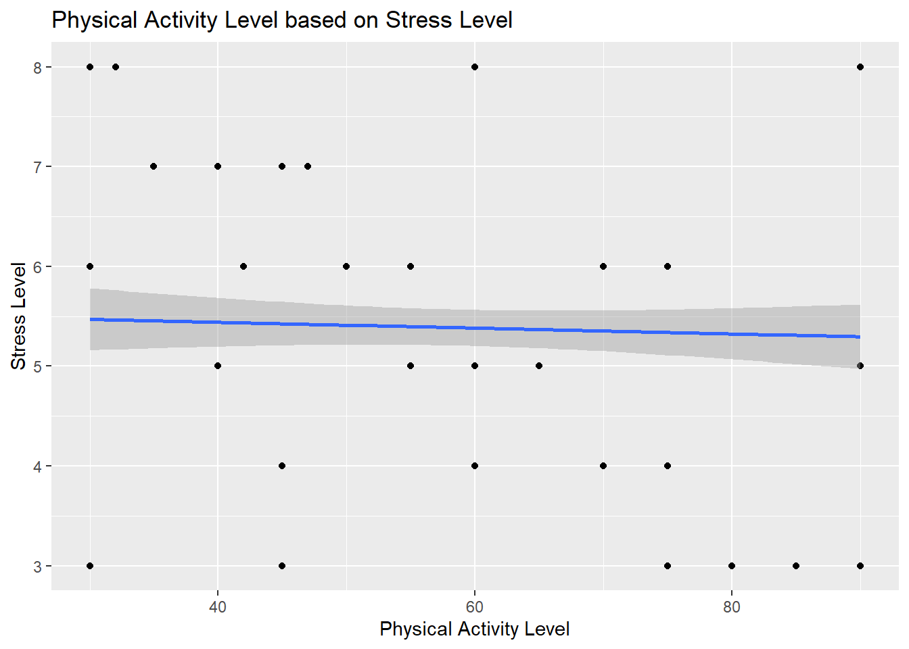
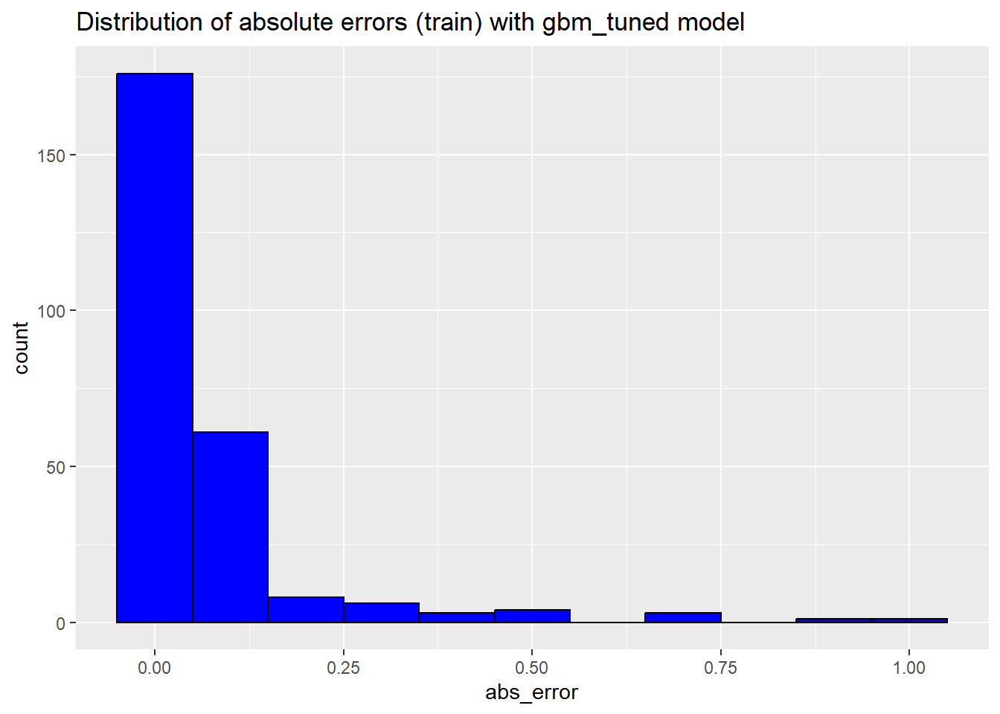

This project serves as the final assignment for the Reproducible Research course. It utilizes a dataset sourced from Kaggle and involves translating the code from Python to R. The aim of this project is to analyze the sleep health of individuals based on their respective lifestyles, incorporating machine learning techniques to enhance the analysis. Variables in this project include:
Gender
Age
Occupation
Sleep Duration
Quality of Sleep
Physical Activity Level
Stress Level
BMI Category
Blood Pressure
Heart Rate
Daily Steps
Sleep Disorder
Introduction
Sleep disorders (or sleep-wake disorders) are difficulties with the quality, timing, and quantity of sleep that cause daily discomfort and impairment in functioning. Sleep-wake disturbances are frequently associated with physical or mental health illnesses such as depression, anxiety, or cognitive difficulties. There are various forms of sleep-wake disorders, with insomnia being the most frequent. Other sleep-wake problems include sleep apnea. Insomnia is a common sleep problem that makes it difficult to get asleep and remain asleep. Meanwhile, sleep apnea is a condition in which you stop breathing while asleep.
Library
# Libraries usedlibrary(dplyr)
Attaching package: 'dplyr'
The following objects are masked from 'package:stats':
filter, lag
The following objects are masked from 'package:base':
intersect, setdiff, setequal, union
library(tidyr)library(ggplot2)library(patchwork)
Warning: package 'patchwork' was built under R version 4.3.3
library(corrplot)
corrplot 0.92 loaded
library(ggExtra)
Warning: package 'ggExtra' was built under R version 4.3.3
library(gbm)
Warning: package 'gbm' was built under R version 4.3.3
Loaded gbm 2.1.9
This version of gbm is no longer under development. Consider transitioning to gbm3, https://github.com/gbm-developers/gbm3
library(caret)
Warning: package 'caret' was built under R version 4.3.3
Loading required package: lattice
library(caTools)
Warning: package 'caTools' was built under R version 4.3.3
library(stats) library(GGally)
Warning: package 'GGally' was built under R version 4.3.3
Registered S3 method overwritten by 'GGally':
method from
+.gg ggplot2
Data
# Read the datadata <-read.csv('Sleep_health_and_lifestyle_dataset.csv')
Data Cleaning
# Drop NA (if existed)data <-na.omit(data)# Standardize "Normal Weight" and "normal" to "Normal" in "BMI Category"data <- data %>%mutate(BMI.Category =ifelse(BMI.Category %in%c("Normal Weight", "normal"), "Normal", BMI.Category))# View data cleanedhead(data)
We delete NA data and also correct the values in the dataset because normal weight and normal are the same.
# Split the Blood.Pressure column into two new columns and convert to numericdata <- data %>%separate(col = Blood.Pressure, into =c("Systolic Pressure", "Diastolic Pressure"), sep ="/", convert =TRUE) %>%mutate(`Systolic Pressure`=as.numeric(`Systolic Pressure`),`Diastolic Pressure`=as.numeric(`Diastolic Pressure`))# Check the structure of the updated data framestr(data)
Person.ID Gender Age Occupation
Min. : 1.00 Length:374 Min. :27.00 Length:374
1st Qu.: 94.25 Class :character 1st Qu.:35.25 Class :character
Median :187.50 Mode :character Median :43.00 Mode :character
Mean :187.50 Mean :42.18
3rd Qu.:280.75 3rd Qu.:50.00
Max. :374.00 Max. :59.00
Sleep.Duration Quality.of.Sleep Physical.Activity.Level Stress.Level
Min. :5.800 Min. :4.000 Min. :30.00 Min. :3.000
1st Qu.:6.400 1st Qu.:6.000 1st Qu.:45.00 1st Qu.:4.000
Median :7.200 Median :7.000 Median :60.00 Median :5.000
Mean :7.132 Mean :7.313 Mean :59.17 Mean :5.385
3rd Qu.:7.800 3rd Qu.:8.000 3rd Qu.:75.00 3rd Qu.:7.000
Max. :8.500 Max. :9.000 Max. :90.00 Max. :8.000
BMI.Category Systolic Pressure Diastolic Pressure Heart.Rate
Length:374 Min. :115.0 Min. :75.00 Min. :65.00
Class :character 1st Qu.:125.0 1st Qu.:80.00 1st Qu.:68.00
Mode :character Median :130.0 Median :85.00 Median :70.00
Mean :128.6 Mean :84.65 Mean :70.17
3rd Qu.:135.0 3rd Qu.:90.00 3rd Qu.:72.00
Max. :142.0 Max. :95.00 Max. :86.00
Daily.Steps Sleep.Disorder
Min. : 3000 Length:374
1st Qu.: 5600 Class :character
Median : 7000 Mode :character
Mean : 6817
3rd Qu.: 8000
Max. :10000
# Define a function to categorize blood pressurecategorize_blood_pressure <-function(systolic, diastolic) {if (is.na(systolic) |is.na(diastolic)) {return(NA) } elseif (systolic <120& diastolic <80) {return('Optimal') } elseif (systolic <=139| diastolic <=89) {return('Normal') } elseif (systolic >=140| diastolic >=90) {return('Hypertension') } else {return('Other') }}# Apply the categorization function to create the Blood Pressure Category columndata <- data %>%rowwise() %>%mutate(`Blood.Pressure.Category`=categorize_blood_pressure(`Systolic Pressure`, `Diastolic Pressure`))# View the newest datahead(data)
# A tibble: 6 × 15
# Rowwise:
Person.ID Gender Age Occupation Sleep.Duration Quality.of.Sleep
<int> <chr> <int> <chr> <dbl> <int>
1 1 Male 27 Software Engineer 6.1 6
2 2 Male 28 Doctor 6.2 6
3 3 Male 28 Doctor 6.2 6
4 4 Male 28 Sales Representative 5.9 4
5 5 Male 28 Sales Representative 5.9 4
6 6 Male 28 Software Engineer 5.9 4
# ℹ 9 more variables: Physical.Activity.Level <int>, Stress.Level <int>,
# BMI.Category <chr>, `Systolic Pressure` <dbl>, `Diastolic Pressure` <dbl>,
# Heart.Rate <int>, Daily.Steps <int>, Sleep.Disorder <chr>,
# Blood.Pressure.Category <chr>
Data Visualization
age_groups <- data %>%mutate(Age.Group =case_when( Age <=35~"35 and below", Age >35~"35 and above" ))ggplot(age_groups, aes(x = Age.Group, y = Sleep.Duration, fill = Age.Group)) +geom_bar(stat ="summary", fun ="mean") +labs(title ="Mean Sleep Duration by Age Group", x ="Age Group", y ="Mean Sleep Duration (hours)") +theme_minimal()
ggplot(age_groups, aes(x = Age.Group, y = Quality.of.Sleep, fill = Age.Group)) +geom_bar(stat ="summary", fun ="mean") +labs(title ="Mean Quality of Sleep by Age Group", x ="Age Group", y ="Mean Quality of Sleep") +theme_minimal()
ggplot(age_groups, aes(x = Age.Group, y = Physical.Activity.Level, fill = Age.Group)) +geom_bar(stat ="summary", fun ="mean") +labs(title ="Mean Physical Activity Level by Age Group", x ="Age Group", y ="Mean Physical Activity Level") +theme_minimal()

ggplot(age_groups, aes(x = Age.Group, y = Stress.Level, fill = Age.Group)) +geom_bar(stat ="summary", fun ="mean") +labs(title ="Mean Stress Level by Age Group", x ="Age Group", y ="Mean Stress Level") +theme_minimal()
# Pair plot of the selected variablesggpairs(data %>%select(Sleep.Duration, Quality.of.Sleep, Physical.Activity.Level, Stress.Level))
ggplot(data, aes(x = Stress.Level)) +geom_density(fill ="lightblue", alpha =0.5) +labs(title ="Density Plot of Stress Level", x ="Stress Level", y ="Density") +theme_minimal()
ggplot(data, aes(x = Physical.Activity.Level)) +geom_density(fill ="lightblue", alpha =0.5) +labs(title ="Density Plot of Stress Level", x ="Stress Level", y ="Density") +theme_minimal()
ggplot(data, aes(x = Sleep.Duration)) +geom_density(fill ="lightblue", alpha =0.5) +labs(title ="Density Plot of Stress Level", x ="Stress Level", y ="Density") +theme_minimal()

# Create a box plot for Age distributionage_boxplot <-ggplot(data, aes(x ='', y = Age)) +geom_boxplot() +labs(title ="Age Distribution", y ="Age", x ="") +theme_minimal()# Create a histogram for Age distributionage_histogram <-ggplot(data, aes(x = Age)) +geom_histogram(binwidth =1, fill ="lightblue", color ="black") +labs(title ="Age Distribution", x ="Age", y ="Count") +theme_minimal()# Create a box plot for Quality of Sleep distributionquality_of_sleep_boxplot <-ggplot(data, aes(x ='', y = Quality.of.Sleep)) +geom_boxplot() +labs(title ="Quality of Sleep Distribution", y ="Quality of Sleep", x ="") +theme_minimal()# Create a histogram for Quality of Sleep distributionquality_of_sleep_histogram <-ggplot(data, aes(x = Quality.of.Sleep)) +geom_histogram(binwidth =0.5, fill ="lightblue", color ="black") +labs(title ="Quality of Sleep Distribution", x ="Quality of Sleep", y ="Count") +theme_minimal()# Create a box plot for Physical Activity Level distributionphysical_activity_boxplot <-ggplot(data, aes(x ='', y = Physical.Activity.Level)) +geom_boxplot() +labs(title ="Physical Activity Level Distribution", y ="Physical Activity Level", x ="") +theme_minimal()# Create a histogram for Physical Activity Level distributionphysical_activity_histogram <-ggplot(data, aes(x = Physical.Activity.Level)) +geom_histogram(binwidth =5, fill ="lightblue", color ="black") +labs(title ="Physical Activity Level Distribution", x ="Physical Activity Level", y ="Count") +theme_minimal()# Create a box plot for Stress Level distributionstress_level_boxplot <-ggplot(data, aes(x ='', y = Stress.Level)) +geom_boxplot() +labs(title ="Stress Level Distribution", y ="Stress Level", x ="") +theme_minimal()# Create a histogram for Stress Level distributionstress_level_histogram <-ggplot(data, aes(x = Stress.Level)) +geom_histogram(binwidth =1, fill ="lightblue", color ="black") +labs(title ="Stress Level Distribution", x ="Stress Level", y ="Count") +theme_minimal()# Create a box plot for Heart Rate distributionheart_rate_boxplot <-ggplot(data, aes(x ='', y = Heart.Rate)) +geom_boxplot() +labs(title ="Heart Rate Distribution", y ="Heart Rate", x ="") +theme_minimal()# Create a histogram for Heart Rate distributionheart_rate_histogram <-ggplot(data, aes(x = Heart.Rate)) +geom_histogram(binwidth =1, fill ="lightblue", color ="black") +labs(title ="Heart Rate Distribution", x ="Heart Rate", y ="Count") +theme_minimal()# Create a box plot for Daily Steps distributiondaily_steps_boxplot <-ggplot(data, aes(x ='', y = Daily.Steps)) +geom_boxplot() +labs(title ="Daily Steps Distribution", y ="Daily Steps", x ="") +theme_minimal()# Create a histogram for Daily Steps distributiondaily_steps_histogram <-ggplot(data, aes(x = Daily.Steps)) +geom_histogram(binwidth =500, fill ="lightblue", color ="black") +labs(title ="Daily Steps Distribution", x ="Daily Steps", y ="Count") +theme_minimal()# Combine the plots into a single figurecombined_plots <- (age_boxplot | age_histogram) / (quality_of_sleep_boxplot | quality_of_sleep_histogram) / (physical_activity_boxplot | physical_activity_histogram) / (stress_level_boxplot | stress_level_histogram) / (heart_rate_boxplot | heart_rate_histogram) / (daily_steps_boxplot | daily_steps_histogram) # Define the layout of the combined plotcombined_plot_layout <- combined_plots +plot_layout(ncol =2)# Print the combined plot with the layoutprint(combined_plot_layout)
Age Distribution:
The box plot shows an almost flat or even distribution of age. There are only a few outliers on the right side, which is indicated by this histogram. It is rather uniform across different age segments with a little spike at middle age as suggested in the diagram below.
Quality of Sleep Distribution:
Average could be interpreted from the box plot, from which it can be seen that values cluster slightly towards the middle, suggesting that most people have moderate sleep quality while few people have very good sleep quality occasionally. This is evidenced by the histogram where the majority of the subjects reported their sleep quality to be average and few responded they have either very good or very bad sleep quality.
Physical Activity Level Distribution:
When it comes to physical activity levels, the shapes of the box plots indicate that the range is wide, and the values varies significantly with some lower and upper outliers. This is perhaps the most striking characteristic of the histogram since it indicates that the sample is bimodal, as the high and low extremes of the activity scale are tightly packed. This might imply that there are two separate groups in the population: A less active regionalisation and a more active regionalisation.
Stress Level Distribution:
As evidenced by the box plot, stress is not a highly skewed variable because most cases are located around the midline, and there is no long tail section of extreme cases. The histogram above indicates that the distribution is relatively equal across the various stress levels, with slightly high results getting a small peak.
Heart Rate Distribution:
The box plot of resting heart rate denotes that the dispersion is relatively limited, that is, most people’s heart rate is fairly constant and there a few extreme cases or a few cases outside the interquartile range. The histogram indicates the distribution of Cardiac, which is normal with the peak at 70 per minute, which is normal for an adult.
Daily Steps Distribution:
It shows a box plot to express the range of number of daily steps where there is fluctuation in the count present in different patients, and some of the values reaching extremely high values. The histogram brought out that an increased number of people are inclined towards having low daily steps with lesser people taking a relatively higher number of steps.
# Calculate mean, median, and modemean_sleep <-mean(data$Quality.of.Sleep, na.rm =TRUE)median_sleep <-median(data$Quality.of.Sleep, na.rm =TRUE)mode_sleep <-as.numeric(names(sort(table(data$Quality.of.Sleep), decreasing =TRUE)[1]))# Create the histogram and add lines for mean, median, and modequality_of_sleep_plot <-ggplot(data, aes(x = Quality.of.Sleep)) +geom_histogram(aes(y = ..count..), binwidth =1, fill ="lightblue", color ="black") +geom_vline(aes(xintercept = mean_sleep, color ="Mean"), linetype ="dashed", linewidth =1) +geom_vline(aes(xintercept = median_sleep, color ="Median"), linetype ="dotted", linewidth =1) +geom_vline(aes(xintercept = mode_sleep, color ="Mode"), linetype ="dotdash", linewidth =1) +scale_color_manual(name ="Statistics", values =c("Mean"="red", "Median"="green", "Mode"="blue")) +labs(title ="Quality of Sleep Distribution", x ="Quality of Sleep", y ="Count") +theme_minimal() +theme(legend.position ="right",plot.title =element_text(hjust =0.5),axis.title.x =element_text(vjust =-0.2),axis.title.y =element_text(vjust =1.2) )# Print the plotprint(quality_of_sleep_plot)
Warning: The dot-dot notation (`..count..`) was deprecated in ggplot2 3.4.0.
ℹ Please use `after_stat(count)` instead.
The majority of participants provided their assessment of the quality of the night’s sleep and the results can be summarized by stating that most of them had an excellent night’s sleep, as was indicated by the scores of 7 and 8. Thus, it can also be noted that the location of the mode is above both the mean and the median, which suggests that while there is a number of people experiencing poor quality of sleep in this group, there are many more people who sleep well.
# Column namesquality_of_sleep_col <-"Quality.of.Sleep"grouping_cols <-c("Gender", "Occupation", "BMI.Category", "Blood.Pressure.Category", "Sleep.Disorder")plots <-list()for(grouping_col in grouping_cols) {# Check if each group has at least two data points valid_groups <- data %>%group_by(!!sym(grouping_col)) %>%filter(n() >1) %>%pull(!!sym(grouping_col)) %>%unique()# Create the density plot only for valid groupsif (length(valid_groups) >0) { p <-ggplot(data %>%filter(!!sym(grouping_col) %in% valid_groups), aes_string(x = quality_of_sleep_col, fill = grouping_col)) +geom_density(alpha =0.7) +theme_minimal() +labs(title =paste("Quality of Sleep by", grouping_col)) plots[[grouping_col]] <- p } else {warning(paste("Not enough data to plot", grouping_col)) }}
Warning: `aes_string()` was deprecated in ggplot2 3.0.0.
ℹ Please use tidy evaluation idioms with `aes()`.
ℹ See also `vignette("ggplot2-in-packages")` for more information.
# Check your list of plotsplots
$Gender
$Occupation
$BMI.Category
$Blood.Pressure.Category
$Sleep.Disorder
# To display the plotsif (length(plots) >0) {library(gridExtra)do.call(grid.arrange, c(plots, ncol =2))}
Attaching package: 'gridExtra'
The following object is masked from 'package:dplyr':
combine
The study conclusively establishes that the men and women, employed and unemployed, with high and low BMI, high and low blood pressure and those who have and don’t have sleeping disorders have different patterns and rate of sleep quality. As based on the findings, lifestyle and health circumstances seem to influence sleep quality considerably.
# Boxplot for Age by Genderage_plot <-ggplot(data, aes(x = Gender, y = Age, fill = Gender)) +geom_boxplot() +labs(title ="1. How old are they?", y ="Age", x ="Gender") +theme_minimal()# Boxplot for Sleep Duration by Gendersleep_duration_plot <-ggplot(data, aes(x = Gender, y =`Sleep.Duration`, fill = Gender)) +geom_boxplot() +labs(title ="2. How long do they sleep?", y ="Sleep.Duration", x ="Gender") +theme_minimal()# Boxplot for Quality of Sleep by Genderquality_sleep_plot <-ggplot(data, aes(x = Gender, y =`Quality.of.Sleep`, fill = Gender)) +geom_boxplot() +labs(title ="3. How well do they sleep?", y ="Quality of Sleep", x ="Gender") +theme_minimal()# Combine the plots into a single plot windowlibrary(gridExtra)grid.arrange(age_plot, sleep_duration_plot, quality_sleep_plot, ncol =3)
Age:
The age boxplot further portrays that there exists a tendency of women in this dataset to be relatively older than men in terms of median as depicted in the boxplot as a higher median bar for women as compared to men. Similar values indicating the range in the top and bottom of boxes and the IQR signifying the height of the boxes also suggest a similar dispersion of age for both boys and girls. The two whiskers show that there are some men and females younger than the respondents and others older than the respondents within the marginal age group categories of 25-34 and 35-44 years. However, the range here tells us that the females are older, with a higher range than males.
Sleep Duration:
By comparing the median sleep time between the two sexes, shown by the central slash in the boxplots, one can infer that men have slightly shorter hours of sleep than women. IQRs represent the distribution of the middle 50% of the data, and the fact that IQRs for the two genders was the same suggests this group is similar for both genders. Thus, there are tendencies in the results point to the fact that males seem to have a considerably wider distribution in sleep time than females where the variability in the results, manifesting itself as the range, is somewhat higher for males than for females.
Quality of Sleep:
The median line indicates therefore that, in terms of the quality of sleep, as outlined above, women seem to have a slightly higher median quality of sleep than men. In males and females, it is also the same range of dispersion of values as shown by IQR. A much wider dispersion in scores was observed for females than for males, which indicates that women’s sleep can vary to a greater extent in quality and can be exceptionally good as well as very bad.
# Count the number of participants in each occupationoccupation_count <- data %>%group_by(Occupation) %>%summarise(Participants =n_distinct(Person.ID))# Calculate the average quality of sleep for each occupationavg_quality_of_sleep <- data %>%group_by(Occupation) %>%summarise(AvgQualityOfSleep =mean(Quality.of.Sleep, na.rm =TRUE))# Number of Participants by Occupationoccupation_count_plot <-ggplot(occupation_count, aes(x =reorder(Occupation, -Participants), y = Participants)) +geom_bar(stat ="identity", fill ="skyblue") +coord_flip() +labs(title ="1. What are their occupations?", x ="Number of participants", y ="Occupation") +theme_minimal()# Average Quality of Sleep by Occupationquality_sleep_plot <-ggplot(avg_quality_of_sleep, aes(x =reorder(Occupation, AvgQualityOfSleep), y = AvgQualityOfSleep)) +geom_bar(stat ="identity", fill ="skyblue") +coord_flip() +labs(title ="2. Who sleeps better, and who worse?", x ="Avg Quality of Sleep", y ="Occupation") +theme_minimal()# Print the plotsprint(occupation_count_plot)
print(quality_sleep_plot)
Occupational Distribution:
Some demographics of the participants of the study are presented in the first chart where the distribution of participants by different vocations is depicted. The largest number of professionals are employed in the field of nursing then followed by engineering profession and then medical profession. With regard to the sample distribution, the managers/sales reps are the least ranked. It could mean that this is the actual proportion of the population from which participants were sampled, or, it could mean that it is indicative of the willingness or availability of different occupations to be involved in the study.
Average Quality of Sleep by Occupation:
The power point continues with the second graph that compares the average sleep quality of different professions. This reveals that engineers have the best quality of sleep than the other professions: then followed by accountants and attorneys. On the other hand, it is seen that scientists and sales people get the least quality sleep, on average, and this may be due to work related problems or may be the they have stress on their work. Alas, even crucial attendants of our health, doctors do not necessarily sleep better than ordinary working individuals, this is evidenced by the fact that, while expanding a list of people studied – doctors took a significant part, their average night’s rest is not the best.
# Count of participants by Sleep Disordersleep_disorder_count <-ggplot(data, aes(x = Sleep.Disorder)) +geom_bar(fill ="skyblue") +labs(title ="1. How many suffer from Sleep Disorders?", x ="Sleep Disorder", y ="Number of Participants") +theme_minimal()# Average Quality of Sleep by Sleep Disorderavg_sleep_quality_by_disorder <-ggplot(data, aes(x = Sleep.Disorder, y = Quality.of.Sleep)) +geom_bar(stat ="summary", fun ="mean", fill ="skyblue") +labs(title ="2. Who sleeps better?", x ="Sleep Disorder", y ="Avg Sleep Quality") +theme_minimal()# Sleep quality boxplot by Sleep Disordersleep_quality_boxplot <-ggplot(data, aes(x = Sleep.Disorder, y = Quality.of.Sleep)) +geom_boxplot(fill ="skyblue") +labs(title ="3. Sleep quality boxplot by Sleep Disorders", x ="Sleep.Disorder", y ="Sleep.Quality") +theme_minimal()# Print the plotsprint(sleep_disorder_count)
print(avg_sleep_quality_by_disorder)
print(sleep_quality_boxplot)
Prevalence of Sleep Disorders:
The pictorial data given for different sleep problems is in the form of a bar graph showing the count of people affected. Hence, it is clear that majority of people do not have any sleep disorder problem; however the most common sleeping disorder is insomnia while the least is sleep apnea.
Average Sleep Quality by Sleep Disorder:
From this bar graph, it can be clearly seen that persons who did not have any sleep problem represented the highest group with the highest average sleep quality rating, thus implying that their sleep was of better quality than the rest. Insomnia and sleep apnea disease involve diseases of the human body, and participants diagnosed with these diseases receive lower scores, suggesting poor sleep quality .
Sleep Quality Distribution by Sleep Disorder:
It shows the status of sleep quality of each sleep disorder category using the box plot. Lastly, they found that people who did not have sleep disorders had the highest median sleep quality. The participants with insomnia have the lowest score in median sleep quality and higher IQR which also show that there is more variations in their sleep quality. The ‘Sleep Apnea’ group has a larger median sleep quality compared to the ‘Insomnia’ group However, the IQR for the ‘Sleep Apnea’ group is larger than that of the ‘Insomnia’ group meaning there is variation in sleep quality among individuals with this disease.
# BMI Data Plotting# Count the number of participants in each BMI categorybmi_counts <- data %>%group_by(BMI.Category) %>%summarise(Number.of.Participants =n())# Calculate the average quality of sleep for each BMI categorybmi_quality <- data %>%group_by(BMI.Category) %>%summarise(Avg.Quality.of.Sleep =mean(Quality.of.Sleep, na.rm =TRUE))# Bar plot for BMI category participant countbmi_count_plot <-ggplot(bmi_counts, aes(x = BMI.Category, y = Number.of.Participants, fill = BMI.Category)) +geom_bar(stat ="identity") +labs(title ="1. What is your BMI category?", x ="BMI Category", y ="Number of participants") +theme_minimal()# Bar plot for average quality of sleep by BMI categorybmi_quality_plot <-ggplot(bmi_quality, aes(x = BMI.Category, y = Avg.Quality.of.Sleep, fill = BMI.Category)) +geom_bar(stat ="identity") +labs(title ="2. Who sleeps better?", x ="BMI Category", y ="Avg Quality of Sleep") +theme_minimal()# Boxplot for quality of sleep by BMI categorybmi_quality_boxplot <-ggplot(data, aes(x = BMI.Category, y = Quality.of.Sleep, fill = BMI.Category)) +geom_boxplot() +labs(title ="3. Sleep quality boxplot by BMI Category", x ="BMI Category", y ="Quality of Sleep") +theme_minimal()# Display the plotsbmi_count_plot
bmi_quality_plot
bmi_quality_boxplot
BMI Category Distribution:
The first figure is a bar chart to show the participants in each BMI category. The preponderance of the participants was in the ‘Normal’ BMI, and less number in the ‘Overweight’ group and a very negligible number in the ‘Obese’ group.
Average Quality of Sleep by BMI Category:
The second bar chart illustrates the average sleep quality to BMI groupings on a scale inconsistent indicated but most likely bounded by 1 or 10. Of all the groups, the ‘Normal’ BMI seems to enjoy the best average quality of sleep, followed by ‘Overweight’ and ‘Obese’ persons, who report a lower value than the ‘Normal’ BMI. But again, discrepancies are exhibited across the groups seem to be small.
Sleep Quality Boxplot by BMI Category:
The last graphic is a boxplot that provides for a broader picture of the distribution of sleep quality ratings in each bracket of BMI. The ‘Normal’ BMI value has the highest median sleep quality thus its large variance due to one participant who has a very poor sleep quality result. As seen in the ‘Obese’ category, the interquartile range is relatively weak, implying that sleep quality slightly differs a lot among the individuals. The ‘Overweight’ group has the sleep quality which is lower than in ‘Normal’ group but higher than in ‘Obese’ and, moreover, has got the smaller interquartile range than ‘Obese’ category, thus pointing to the higher homogeneity of sleep indicators in ‘Overweight’ people.
# Blood Pressure Data Plotting# Repeat the same process for blood pressure databp_counts <- data %>%group_by(Blood.Pressure.Category) %>%summarise(Number.of.Participants =n())bp_quality <- data %>%group_by(Blood.Pressure.Category) %>%summarise(Avg.Quality.of.Sleep =mean(Quality.of.Sleep, na.rm =TRUE))bp_count_plot <-ggplot(bp_counts, aes(x = Blood.Pressure.Category, y = Number.of.Participants, fill = Blood.Pressure.Category)) +geom_bar(stat ="identity") +labs(title ="1. How is your Blood Pressure level?", x ="Blood Pressure Category", y ="Number of participants") +theme_minimal()bp_quality_plot <-ggplot(bp_quality, aes(x = Blood.Pressure.Category, y = Avg.Quality.of.Sleep, fill = Blood.Pressure.Category)) +geom_bar(stat ="identity") +labs(title ="2. Who sleeps better?", x ="Blood Pressure Category", y ="Avg Quality of Sleep") +theme_minimal()bp_quality_boxplot <-ggplot(data, aes(x = Blood.Pressure.Category, y = Quality.of.Sleep, fill = Blood.Pressure.Category)) +geom_boxplot() +labs(title ="3. Sleep Quality boxplot by Blood Pressure Category", x ="Blood Pressure Category", y ="Quality of Sleep") +theme_minimal()# Display the plotbp_count_plot

bp_quality_plot

bp_quality_boxplot
Blood Pressure Level Distribution:
The bar chart represent the incremented percentage on the basis of blood pressure categories of the participants. The largest proportion comprises the group with normal levels of blood pressure, and the second largest with the group having high blood pressure, while the smallest proportion of the population comprises the group with ideal blood pressure. From the graph above it is evident that the majority of individuals have normal blood pressure levels.
Average Sleep Quality by Blood Pressure Category:
The bar chart where similar to the previous one shows the average of sleep quality depending on the same groups of blood pressure. Most surprisingly, people with ideal BP had the most desirable average sleep quality while the normotensive had a slightly worse average sleep quality compared to the hypertensives who had the worst sleep quality. This leads to a notion that low blood pressure is associated with better quality sleep than the high blood pressure.
Sleep Quality Boxplot by Blood Pressure Category:
The containing boxplot depicting how the quality of sleep changes with respect to different blood pressure groups. Comparing the boxplot for hypertension and normal blood pressure, the former has higher range and the middle-adjoining, with median sleep quality scores higher than the other, and box plot more compacted with a slightly lower median. Thus, the results showed that the ideal blood pressure group has a higher median compare to two other groups, but when evaluating outliers, it can be stated that there are people with ideal blood pressure value, who experience poor sleep quality. This graph shows that for those with the ideal blood pressure, they have higher overall average sleep quality, however, it’s clear that there are different degrees of this within each group.
# Select only the numeric columns from the datanumeric_data <- data[sapply(data, is.numeric)]# Calculating the correlation matrixcor_matrix <-cor(numeric_data, use ="complete.obs")# Create the correlation heatmapcorrplot(cor_matrix, method ="color", type ="upper", tl.col ="black", tl.srt =45,diag =FALSE)
The scale to the right offer how strong the correlation is and value ranges from -1 to 1.
When the coefficient is close to 1, it means that the data marked has a strong positive relationship, and in simpler terms, it means that if one variable increases, the other also experiences an equivalent increase.
A coefficient of approximately -1 means that the relationship has a strong negative form, that negative changes in the first variable are followed by negative changes in the second variable.
If the coefficient is about zero, then it also suggests that there is a negligible or no straight line relationship between the said variables.
Hence, it could be ascertained that there is a fairly strong negative correlation between ‘Age’ and ‘Person. ID’, which is quite rare and suggests that ‘Person. ID’ might have a quantitative relation to age. Nonetheless, any ID should not tie it to age, other than a random numbering system in accordance with age. The study of correlation reveal that there is a positive relationship between between the variable “Quality of Sleep” and the variable “Physical Activity Level” which may suggest that those who are more physically active may enjoy better quality of sleep. While examining the correlation between “Stress Level” and “Systolic Pressure” and “Diastolic Pressure”, it can be suggested that Stress Level has a moderate positive relationship with them, meaning that higher stress correlates with higher blood pressure. This correlation shows that there is a negative correlation between the “Daily Steps” and the “Heart Rate;” therefore, more daily steps are likely to mean a lower resting heart rate, which in this context, is a sign of good health especially in regards to the cardiovascular system.
# Scatter plot of Sleep Duration vs Quality of Sleepplot1 <-ggplot(data, aes(x = Quality.of.Sleep, y = Sleep.Duration)) +geom_point() +geom_smooth(method = lm, se =TRUE) +labs(title ="Long Rest = Good Rest",x ="Quality of Sleep",y ="Sleep Duration (hours)")# Scatter plot of Stress Level vs Quality of Sleepplot2 <-ggplot(data, aes(x = Quality.of.Sleep, y = Stress.Level)) +geom_point() +geom_smooth(method = lm, se =TRUE) +labs(title ="More Stress = Bad Rest",x ="Quality of Sleep",y ="Stress Level")#Show the plotsplot1
`geom_smooth()` using formula = 'y ~ x'

plot2
`geom_smooth()` using formula = 'y ~ x'
Long Rest = Good Rest:
In the first figure we can see a trend positive correlation between the length of sleep and sleep quality. The time devoted to sleep also rises as the scores relating to sleep quality go higher, which means that people who have higher sleep quality get more sleep. When analyzing the changes in data points, it can be noted that the higher the subjective perceived sleep quality, the greater the correlation with the obtained results: most of the points are clustered near the trend line in this case.
More Stress = Bad Rest:
The second figure only draws a negative correlation between stress and sleep quality. The increased stress was thus associated with lower sleep quality as the stress levels intensify, the quality of sleep reduces. The further down the plot, the line indicates reduced stress levels, and in general, all the data points are oriented lower along the X-axis and reflect the trend of lower stress levels being connected to better sleep quality.
# Scatter plot of Physical Activity Level vs Sleep Qualityplot3 <-ggplot(data, aes(x = Quality.of.Sleep, y = Physical.Activity.Level)) +geom_point() +geom_smooth(method = lm, se =TRUE) +labs(title ="A: Sleep quality based on physical activity",x ="Sleep Quality",y ="Physical Activity Level (minutes)")# Scatter plot of Age vs Sleep Durationplot4 <-ggplot(data, aes(x = Age, y = Sleep.Duration)) +geom_point() +geom_smooth(method = lm, se =TRUE) +labs(title ="B: The older you get, the more you sleep",x ="Age",y ="Sleep Duration (hours)")# Scatter plot of Heart Rate vs Sleep Durationplot5 <-ggplot(data, aes(x = Heart.Rate, y = Sleep.Duration)) +geom_point() +geom_smooth(method = lm, se =TRUE) +labs(title ="C: Quickest Heartbeat, Fewest Sleep",x ="Heart Rate",y ="Sleep Duration (hours)")# Scatter plot of Physical Activity vs Sleep Durationplot6 <-ggplot(data, aes(x = Physical.Activity.Level, y = Sleep.Duration)) +geom_point() +geom_smooth(method = lm, se =TRUE) +labs(title ="D: Engaging in physical exercise can facilitate sleep",x ="Physical Activity",y ="Sleep Duration (hours)")#Show the plotsplot3
`geom_smooth()` using formula = 'y ~ x'
plot4
`geom_smooth()` using formula = 'y ~ x'
plot5
`geom_smooth()` using formula = 'y ~ x'
plot6
`geom_smooth()` using formula = 'y ~ x'
Sleep Quality by Physical Activity:
There is a positive relationship between physical activity, in minutes and sleep quality. That is, as physical activity increases so does the sleep quality score. The shaded area is the confidence interval showing a bit of uncertainty around the trend line but in general more physical activity is associated with higher sleep quality.
Sleep Duration and Age:
This graph shows a positive relationship between age and sleep duration, in hours. The sleep duration is increasing with age indicating that older people sleep more rather than less. However the scattering of points shows by how much this can vary, and the extent to which other factors may be involved.
Sleep Duration and Heart Rate:
This graph will help to support a negative relationship between heart rate and sleep duration. That is, the higher the heart rate, the shorter the duration of sleeping. Indeed, the trend line shows a decrease as the heart rate increases, thereby justifying this assumption.
Sleep Duration and Physical Activity:
This graph indicates that, indeed, there is a positive relationship between sleep duration and physical activity. This means the more an individual is physically active, the longer he or she is going to sleep. This graph therefore supports the argument that exercises help an individual to sleep longer.
# Scatter plot of Heartbeat vs Stress Lvevelplot7 <-ggplot(data, aes(x = Heart.Rate, y = Stress.Level)) +geom_point() +geom_smooth(method = lm, se =TRUE) +labs(title ="A: Increased stress leads to quicker heartbeats",x ="Heartbeat",y ="Stress Level")# Scatter plot of Heartbeat vs Quality of Sleepplot8 <-ggplot(data, aes(x = Heart.Rate, y = Quality.of.Sleep)) +geom_point() +geom_smooth(method = lm, se =TRUE) +labs(title ="B: Faster pulse, worse quality of sleep",x ="Heartbeat",y ="Quality of Sleep")#Show the plotsplot7
`geom_smooth()` using formula = 'y ~ x'
plot8
`geom_smooth()` using formula = 'y ~ x'
Increased stress leads to quicker heartbeats:
This scatter plot with a regression line demonstrates a positive link between heart rate and stress level. As the heart rate increases, so does the stress level. The shaded region surrounding the regression line represents the prediction’s confidence interval, indicating that while there is some uncertainty in the connection, the overall trend is positive.
Faster pulse, worse quality of sleep:
This scatter figure, which includes a regression line, shows a negative link between heart rate and sleep quality. As the heart rate rises, the quality of sleep appears to deteriorate. The confidence interval is likewise shaded, indicating variability while maintaining an overall decreasing trend.
# Scatter plot of Physical Activity based on Sleep Qualityplot9 <-ggplot(data, aes(x = Physical.Activity.Level, y = Quality.of.Sleep)) +geom_point() +geom_smooth(method = lm, se =TRUE) +labs(title ="A: Physical Activity based on Sleep Quality",x ="Physical Activity",y ="Sleep Quality")# Scatter plot of Sleep Duration based on Sleep Qualityplot10 <-ggplot(data, aes(x = Sleep.Duration, y = Quality.of.Sleep)) +geom_point() +geom_smooth(method = lm, se =TRUE) +labs(title ="B: Sleep Duration based on Sleep Quality",x ="Sleep Duration",y ="Quality of Sleep")#Show the plotsplot9
`geom_smooth()` using formula = 'y ~ x'
plot10
`geom_smooth()` using formula = 'y ~ x'
Sleep Quality based on Physical Activity:
This scatter plot demonstrates a favorable correlation between physical exercise and sleep quality. As physical activity levels rise, sleep quality appears to improve lightly.
Sleep Quality based on Heartbeat:
This graph illustrates a positive correlation between sleep duration and sleep quality.
# Scatter plot of Stress Level based on Physical Activityplot11 <-ggplot(data, aes(x = Physical.Activity.Level , y = Stress.Level)) +geom_point() +geom_smooth(method = lm, se =TRUE) +labs(title ="Physical Activity Level based on Stress Level",x ="Physical Activity Level",y ="Stress Level")#Show the plotplot11
`geom_smooth()` using formula = 'y ~ x'

Stress Level based on Physical Activity:
This scatter plot depicts the association between physical activity (x-axis) and stress level (y-axis).
# Scatter plot of Sleep Duration vs Age with BMI categoriesp1 <-ggplot(data, aes(x = Age, y = Sleep.Duration, color = BMI.Category)) +geom_point() +ggtitle("Sleep Duration vs Age with BMI categories") +theme_minimal()ggMarginal(p1, type ="histogram")
# Scatter plot of Quality of Sleep vs Age with BMI categoriesp2 <-ggplot(data, aes(x = Age, y = Quality.of.Sleep, color = BMI.Category)) +geom_point() +ggtitle("Quality of Sleep vs Age with BMI categories") +theme_minimal()ggMarginal(p2, type ="histogram")
# Scatter plot of Quality of Sleep vs HeartRate with Sleep Disorder categoriesp3 <-ggplot(data, aes(x = Heart.Rate, y = Quality.of.Sleep, color = Sleep.Disorder)) +geom_point() +ggtitle("Quality of Sleep vs Heart Rate with Sleep Disorder") +theme_minimal()ggMarginal(p3, type ="histogram")
# Scatter plot of Quality of Sleep vs Stress Level with Sleep Disorder categoriesp4 <-ggplot(data, aes(x = Stress.Level, y = Quality.of.Sleep, color = Sleep.Disorder)) +geom_point() +ggtitle("Sleep vs Stress Level with Sleep Disorder") +theme_minimal()ggMarginal(p4, type ="histogram")
# Scatter plot of Quality of Sleep vs Blood Preassurep5 <-ggplot(data, aes(x = Heart.Rate, y = Quality.of.Sleep, color = Blood.Pressure.Category)) +geom_point() +ggtitle("Heartbeat vs Blood Pressure") +theme_minimal()ggMarginal(p5, type ="histogram")
The graphs compare the effects of the physiological health indicators on sleep quantity and quality. The first graph is related to BMI categories and sleep duration by age, which raises the same conclusions that particularly, individuals with normal BMI have a stable sleeping duration in contrast to overweight or obese people. The next couple of graphs continue the analysis of the data on sleep quality, heart rate, stress level and blood pressure, with the data split by different sleep disorders, sleeplessness, insomnia, apnea, etc. These points raise a general tendency according to which have normal HR and BP, which is the normal condition for everyone in general, already causes healthy sleep, and low stress indicates better sleep quality again proving the fact of paying attention to general health conditions to report better nighttime rest.
Machine Learning
Linear Regression
# Response and predictor variablesy <- data$Quality.of.SleepX <- data %>%select(Sleep.Duration, Age, Physical.Activity.Level, Stress.Level, Heart.Rate, Daily.Steps)# Add a constant column for the interceptX <-cbind(Intercept =1, X)# Split the data into training and testing sets (70% train, 30% test)set.seed(42) # For reproducibilitysplit <-sample.split(y, SplitRatio =0.7)X_train <-subset(X, split ==TRUE)X_test <-subset(X, split ==FALSE)y_train <-subset(y, split ==TRUE)y_test <-subset(y, split ==FALSE)# Fit the OLS model to the training datamodel <-lm(y_train ~ ., data =as.data.frame(X_train))summary(model)
Call:
lm(formula = y_train ~ ., data = as.data.frame(X_train))
Residuals:
Min 1Q Median 3Q Max
-1.0422 -0.2033 0.0057 0.2423 1.1027
Coefficients: (1 not defined because of singularities)
Estimate Std. Error t value Pr(>|t|)
(Intercept) 5.332e+00 8.071e-01 6.606 2.27e-10 ***
Intercept NA NA NA NA
Sleep.Duration 6.730e-01 4.888e-02 13.768 < 2e-16 ***
Age 1.532e-02 2.848e-03 5.378 1.70e-07 ***
Physical.Activity.Level -4.056e-05 2.352e-03 -0.017 0.986257
Stress.Level -2.945e-01 2.979e-02 -9.886 < 2e-16 ***
Heart.Rate -3.586e-02 1.013e-02 -3.540 0.000476 ***
Daily.Steps 9.029e-05 3.063e-05 2.947 0.003500 **
---
Signif. codes: 0 '***' 0.001 '**' 0.01 '*' 0.05 '.' 0.1 ' ' 1
Residual standard error: 0.3555 on 256 degrees of freedom
Multiple R-squared: 0.9152, Adjusted R-squared: 0.9133
F-statistic: 460.8 on 6 and 256 DF, p-value: < 2.2e-16
Interpretation of Model Summary:
Output indicates that the predictors Sleep Duration, Age, Stress Level, Heart Rate, and Daily Steps are significant, while Physical Activity Level is not. The model’s high R-squared (0.9152) and Adjusted R-squared (0.9133) values indicate a strong fit.
# Remove Physical Activity Level from the predictorsX <- data %>%select(Age, Sleep.Duration, Stress.Level, Heart.Rate, Daily.Steps)X <-cbind(Intercept =1, X)# Split the data into training and testing sets (70% train, 30% test)set.seed(42) # For reproducibilitysplit <-sample.split(y, SplitRatio =0.7)X_train <-subset(X, split ==TRUE)X_test <-subset(X, split ==FALSE)y_train <-subset(y, split ==TRUE)y_test <-subset(y, split ==FALSE)# Fit the new OLS model to the training datamodel_refined <-lm(y_train ~ ., data =as.data.frame(X_train))summary(model_refined)
Call:
lm(formula = y_train ~ ., data = as.data.frame(X_train))
Residuals:
Min 1Q Median 3Q Max
-1.04221 -0.20251 0.00561 0.24238 1.10248
Coefficients: (1 not defined because of singularities)
Estimate Std. Error t value Pr(>|t|)
(Intercept) 5.341e+00 6.203e-01 8.609 7.48e-16 ***
Intercept NA NA NA NA
Age 1.531e-02 2.840e-03 5.393 1.57e-07 ***
Sleep.Duration 6.728e-01 4.680e-02 14.375 < 2e-16 ***
Stress.Level -2.943e-01 2.798e-02 -10.519 < 2e-16 ***
Heart.Rate -3.596e-02 8.131e-03 -4.423 1.44e-05 ***
Daily.Steps 8.983e-05 1.493e-05 6.015 6.15e-09 ***
---
Signif. codes: 0 '***' 0.001 '**' 0.01 '*' 0.05 '.' 0.1 ' ' 1
Residual standard error: 0.3548 on 257 degrees of freedom
Multiple R-squared: 0.9152, Adjusted R-squared: 0.9136
F-statistic: 555.1 on 5 and 257 DF, p-value: < 2.2e-16
# Define MAE functionmae <-function(y, pred) {return(round(mean(abs(y - pred)), 2))}# Predictions on training data with refined modelpred_train_refined <-predict(model_refined, newdata =as.data.frame(X_train))# MAE for training data with refined modelnaive_mae_train <-mae(y_train, mean(y_train))model_mae_train_refined <-mae(y_train, pred_train_refined)print(paste('Naïve Training MAE:', naive_mae_train))
[1] "Naïve Training MAE: 1.05"
print(paste('Training MAE with refined model:', model_mae_train_refined))
[1] "Training MAE with refined model: 0.27"
# Plotting distribution of errors for refined modelggplot(data.frame(error = y_train - pred_train_refined), aes(x = error)) +geom_histogram(binwidth =0.1, fill ='blue', color ='black') +ggtitle("Distribution of errors (train) with refined model")
ggplot(data.frame(abs_error =abs(y_train - pred_train_refined)), aes(x = abs_error)) +geom_histogram(binwidth =0.1, fill ='blue', color ='black') +ggtitle("Distribution of absolute errors (train) with refined model")
# Predictions on test data with refined modelpred_test_refined <-predict(model_refined, newdata =as.data.frame(X_test))# MAE for test data with refined modelnaive_mae_test <-mae(y_test, mean(y_test))model_mae_test_refined <-mae(y_test, pred_test_refined)print(paste('Naïve Testing MAE:', naive_mae_test))
[1] "Naïve Testing MAE: 1.03"
print(paste('Testing MAE with refined model:', model_mae_test_refined))
[1] "Testing MAE with refined model: 0.31"
# Plotting distribution of errors for refined modelggplot(data.frame(error = y_test - pred_test_refined), aes(x = error)) +geom_histogram(binwidth =0.1, fill ='blue', color ='black') +ggtitle("Distribution of errors (test) with refined model")
ggplot(data.frame(abs_error =abs(y_test - pred_test_refined)), aes(x = abs_error)) +geom_histogram(binwidth =0.1, fill ='blue', color ='black') +ggtitle("Distribution of absolute errors (test) with refined model")
Improved Model :
By removing an insignificant predictor (Physical.Activity.Level), multicollinearity issues are likely reduced, resulting in more reliable estimates of the coefficients. The refined model maintains a high R-squared (0.9152) and Adjusted R-squared (0.9136), indicating that the model still explains a significant portion of the variance in the response variable. The F-statistic is very high and significant, suggesting that the overall model is a good fit.
Mean Absolute Error :
The Training MAE for the refined model (0.27) is much lower than the Naïve Training MAE (1.05), indicating that the model fits the training data well. The Testing MAE for the refined model (0.31) is also lower than the Naïve Testing MAE (1.03), showing good predictive performance on the test data. The similarity between Training MAE (0.27) and Testing MAE (0.31) suggests that the model does not overfit the training data and generalizes well to unseen data. .
Gradient Boosting Machine In this part of the project, we implemented a Gradient Boosting Machine (GBM) model to predict the quality of sleep based on various factors such as sleep duration, age, physical activity level, stress level, heart rate, and daily steps. We began by defining a grid of hyperparameters to tune the model, including the number of trees, interaction depth, shrinkage (learning rate), and minimum observations in the terminal nodes. We set up a 5-fold cross-validation to robustly evaluate the model’s performance and prevent overfitting. The data was split into training (70%) and testing (30%) sets, and the GBM model was trained using the defined hyperparameters and cross-validation settings.
# Splitting the data into training (70%) and testing (30%) setsset.seed(455) trainIndex <-createDataPartition(data$`Quality.of.Sleep`, p =0.7, list =FALSE)trainData <- data[trainIndex, ]testData <- data[-trainIndex, ]
# Defining the hyperparameter gridgrid <-expand.grid(n.trees =c(25, 50, 100, 150), # Number of treesinteraction.depth =c(1, 2), # Depth of each treeshrinkage =c(0.05, 0.1, 0.15), # Learning raten.minobsinnode =c(5, 10) # Minimum number of observations in the terminal nodes)# Setting up the training control with 5-fold cross-validationtrain_control <-trainControl(method ="cv", number =5)
# Training the model using the grid searchset.seed(455) # For reproducibilitygbm_tuned <-train(`Quality.of.Sleep`~`Sleep.Duration`+ Age +`Physical.Activity.Level`+`Stress.Level`+`Heart.Rate`+`Daily.Steps`,data = trainData,method ="gbm",trControl = train_control,tuneGrid = grid,verbose =FALSE)
# Predictions on training data with gbm_tuned modelpred_train_gbm_tuned <-predict(gbm_tuned, newdata = trainData)mae <-function(y, pred) {return(round(mean(abs(y - pred)), 2))}# MAE for training data with gbm_tuned modelnaive_mae_train <-mae(trainData$`Quality.of.Sleep`, mean(trainData$`Quality.of.Sleep`))model_mae_train_gbm_tuned <-mae(trainData$`Quality.of.Sleep`, pred_train_gbm_tuned)print(paste('Naive Training MAE:', naive_mae_train))
[1] "Naive Training MAE: 1.03"
print(paste('Training MAE with gbm_tuned model:', model_mae_train_gbm_tuned))
[1] "Training MAE with gbm_tuned model: 0.08"
# Plotting distribution of errors for gbm_tuned model on training dataggplot(data.frame(error = trainData$`Quality.of.Sleep`- pred_train_gbm_tuned), aes(x = error)) +geom_histogram(binwidth =0.1, fill ='blue', color ='black') +ggtitle("Distribution of errors (train) with gbm_tuned model")
ggplot(data.frame(abs_error =abs(trainData$`Quality.of.Sleep`- pred_train_gbm_tuned)), aes(x = abs_error)) +geom_histogram(binwidth =0.1, fill ='blue', color ='black') +ggtitle("Distribution of absolute errors (train) with gbm_tuned model")

# Predictions on test data with gbm_tuned modelpred_test_gbm_tuned <-predict(gbm_tuned, newdata = testData)# MAE for test data with gbm_tuned modelnaive_mae_test <-mae(testData$`Quality.of.Sleep`, mean(testData$`Quality.of.Sleep`))model_mae_test_gbm_tuned <-mae(testData$`Quality.of.Sleep`, pred_test_gbm_tuned)print(paste('Naive Testing MAE:', naive_mae_test))
[1] "Naive Testing MAE: 1.08"
print(paste('Testing MAE with gbm_tuned model:', model_mae_test_gbm_tuned))
[1] "Testing MAE with gbm_tuned model: 0.11"
# Plotting distribution of errors for gbm_tuned model on test dataggplot(data.frame(error = testData$`Quality.of.Sleep`- pred_test_gbm_tuned), aes(x = error)) +geom_histogram(binwidth =0.1, fill ='blue', color ='black') +ggtitle("Distribution of errors (test) with gbm_tuned model")
ggplot(data.frame(abs_error =abs(testData$`Quality.of.Sleep`- pred_test_gbm_tuned)), aes(x = abs_error)) +geom_histogram(binwidth =0.1, fill ='blue', color ='black') +ggtitle("Distribution of absolute errors (test) with gbm_tuned model")
Summary of Gradient Boosting Machine The naive MAE represents the error when predicting the mean value of the quality of sleep for all instances, serving as a baseline for comparison. The substantial reduction in MAE from the naive model (1.08) to the tuned GBM model (0.11) on the testing set indicates a significant improvement in predictive accuracy. Similarly, the training MAE for the GBM model (0.08) is much lower than the naive training MAE (1.03), demonstrating that the model effectively learned the patterns in the training data. These results suggest that the GBM model is well-tuned and capable of making accurate predictions, with minimal error, on both the training and testing datasets.
References
American Psychiatric Association. (n.d.). What are sleep disorders? Retrieved June 15, 2024, from https://www.psychiatry.org/patients-families/sleep-disorders/what-are-sleep-disorders
Cleveland Clinic. (n.d.). Sleep apnea. Retrieved June 15, 2024, from https://my.clevelandclinic.org/health/diseases/8718-sleep-apnea
Giacometti, A. (n.d.). Sleep health analysis: How to sleep better. Retrieved June 15, 2024, from https://www.kaggle.com/code/alessandrogiacometti/sleep-health-analysis-how-to-sleep-better
Mayo Clinic. (n.d.). Insomnia: Symptoms & causes. Retrieved June 15, 2024, from https://www.mayoclinic.org/diseases-conditions/insomnia/symptoms-causes/syc-20355167
Ministero della Salute. (n.d.). Ipertensione arteriosa. Retrieved June 15, 2024, from https://www.salute.gov.it/portale/alleanzaCardioCerebrovascolari/dettaglioSchedeAlleanzaCardioCerebrovascolari.jsp?lingua=italiano&id=18&area=Alleanza%20italiana%20per%20le%20malattie%20cardio-cerebrovascolari&menu=malattie
OpenAI. (2024). Personal communication via ChatGPT [Personal correspondence]. June 15, 2024.